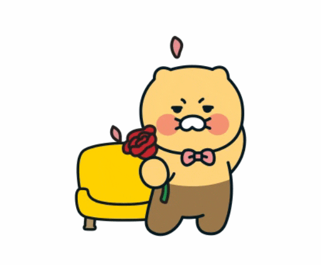
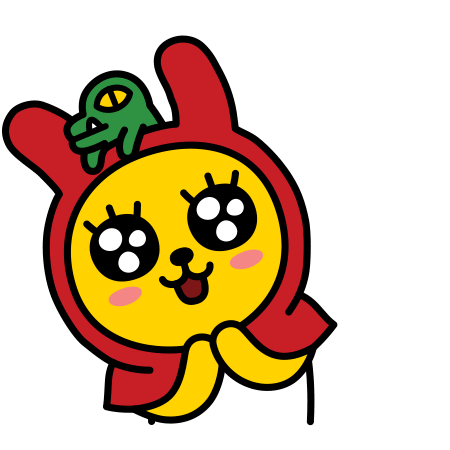

카카오 프렌즈 캐릭터 소개합니다
i lOVe hTml Css 큰 덩치와 무뚝뚝한 표정으로 오해를 많이 사지만, 사실 누구보다도 여리고 섬세한 소녀감성을 지닌 반전 매력의 소유자!원래 아프리카 둥둥섬 왕위 계승자였으나, 자유로운 삶을 동경해 탈출! 카카오프렌즈의 든든한 조언자 역할을 맡고 있습니다. 꼬리가 길면 잡히기 때문에, 꼬리가 짧습니다.
| 캐릭터 이름 | 설명 |
|---|---|
| 춘식이 | 춘식이는 고양이 입니다. |
| 춘식이2 |
길냥이 출신 성별 미상의 고양이. 라이언의 애완동물입니다. 골판지 상자, 고구마 상자에 들어가 있는 걸 좋아하고, 가장 좋아하는 음식은 고구마입니다. 그리고 제일 좋아하는 장난감은 강아지풀 장난감 입니다.
자세한 내용은 여기를 클릭하세요.
카카오톡에서 제공한 공식 설정에 따르면, '호기심 많은 장난꾸러기 무지! 토끼옷을 입고 있지만 정체는 누가 봐도 삶은 달걀 단무지. 토끼옷을 벗으면 부끄러움을 많이 탑니다.' 라고 하지만, 아직 토끼옷을 벗은 모습을 보인 적은 없다. 벗으면 이렇게 된다 정식 로마자 표기는 Muzi인데, 카카오 그룹 이모티콘에는 어째서인지 2016년까지 Muji and friends라고 되어있었다.
자세한 내용은 여기를 클릭하세요.